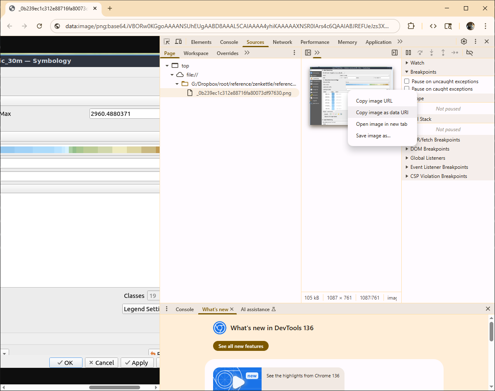

my_vector <- c(10, 20, 30, 40, 50)
# Accessing the first element
first_element <- my_vector[1]
print(first_element)[1] 10last_element = my_vector[length(my_vector)]
print(last_element)[1] 50.jpg)
.jpg)
So much of a “data scientists’ day” can be reduced to data pipelines and data manipulation. While this can be a productive use of time and resources, it very rarely amounts to something tangible and more often than not results in the shuffling and replication of those same bits in a different format with a new file extension. This page is my copy-paste reference for these pipelines and workflows to help save time and demonstrate / remind me of the better practices across the community. And the more efficient that is, the faster we create meaningful knowledge and insight instead of moving files around and across hard drives.
Indexing in Python starts with 0. In R it starts with 1.
my_vector <- c(10, 20, 30, 40, 50)
# Accessing the first element
first_element <- my_vector[1]
print(first_element)[1] 10last_element = my_vector[length(my_vector)]
print(last_element)[1] 50my_list = [10, 20, 30, 40, 50]
# Accessing the first element
first_element = my_list[0]
print(first_element)10last_element = my_list[-1]
print(last_element)50Most will use the terms interchangeably, everyone knows the principle you are aiming to communicate, and only the most nitpicky will care to correct you. The sematic distinction is…
| R - Libraries | Python - Packages |
|---|---|
| In R, packages are the collections of functions and other data bundled together and distributed via either GitHub, or CRAN (The Comprehensive R Archive Network). Packages extend the functionality of R by providing additional functions and tools for specific tasks or domains. Libraries are the term used for the directory in which a packages functions are stored. | In Python, packages are directories that contain multiple modules and a special init.py file. Packages provide a way to organize related modules into a hierarchical structure. They enable you to create reusable code libraries and distribute them for others to use and are distributed via the Python Package Index (PyPI) repository for Python packages, and the pip package manager or conda environment are used to install and manage packages. Libraries are groups of packages that make accomplishing a particular task easier. |
```{r}
utils::remove.packages("package")
install.packages("package")
remotes.install_github("NOAA-OWP/RRASSLER@branch_name")
library("package_name")
```If you get an error along the lines of cannot open URL 'https://api.github.com/repos/<repo_here>/tarball/HEAD, you can try the tips I outline here.
```{python}
# With conda
conda remove package_name
conda install package_name
# Or with pip
pip uninstall package_name
pip install package_name
pip install package_name=='#.##'
>>> import package_name
```# Define variables with different data types
name <- "Bob" # String
age <- 25 # Integer
height <- 3.14159 # Double (float)
is_student <- TRUE # Boolean
# Use the class() function to check data types
class(name) # Character[1] "character"class(age) # Integer[1] "numeric"class(height) # Numeric[1] "numeric"class(is_student) # Logical[1] "logical"# Alternatively, use typeof() for more detailed info
typeof(name) # character[1] "character"typeof(age) # integer[1] "double"typeof(height) # double[1] "double"typeof(is_student) # logical[1] "logical"# if (inherit(X, "Spatial"))
# X <- sf::st_as_sf(X)
#
# if (inherit(Y, "Raster"))
# Y <- stars::st_as_stars(Y)
#
# if (inherit(Y, "SpatRaster"))
# Y <- stars::st_as_stars(Y) # that one does not exist do it yourself
#
# if(!is(X, "sf"))
# stop("Y has to be a spatial object ")
#
# if(!is(Y, "stars")
# stop("Y has to be a raster object")
#
# geom = sf::st_geometry(X)
#
# if (!is(geom, "sfc_POLYGON") & !is(geom, "sfc_MULTIPOLYGON"))
# stop("Y has to be a spatial polygon object ")# Define variables with different data types
name = "Bob" # String
age = 25 # Integer
height = 3.14159 # Float
is_student = True # Boolean
# Use the type() function to check data types
print(f"Name (string): {type(name)}")Name (string): <class 'str'>print(f"Age (integer): {type(age)}")Age (integer): <class 'int'>print(f"Pi (float): {type(height)}")Pi (float): <class 'float'>print(f"Is Adult (boolean): {type(is_student)}")Is Adult (boolean): <class 'bool'>In R, only a single logical TRUE is considered true in conditions like if(). FALSE is false. Numeric 0 is not automatically false, and non-zero numbers are not automatically true in if. NA in a condition usually results in an error or missing value. Using vectors in if usually results in a warning, as if expects a single value. Logical operations (&, |) work element-wise on vectors.
In Python, many things have inherent “truthiness”:
# Explicit logical values
if (TRUE) { message("TRUE is true") }TRUE is trueif (!FALSE) { message("FALSE is false") }FALSE is false# Numeric values in `if` - Generally avoid this
if (1) { message("1 is true") } # This works but is bad practice1 is trueif (0) { message("0 is true") } # This block is NOT executed
if (-1) { message("-1 is true") } # This works but is bad practice-1 is true# Using logical vectors (element-wise)
logical_vec <- c(TRUE, FALSE, TRUE)
numeric_vec <- c(1, 0, -5)
print(logical_vec & c(TRUE, TRUE, FALSE)) # Element-wise AND -> TRUE FALSE FALSE[1] TRUE FALSE FALSEprint(logical_vec | c(FALSE, FALSE, FALSE)) # Element-wise OR -> TRUE FALSE TRUE[1] TRUE FALSE TRUEprint(!logical_vec) # Element-wise NOT -> FALSE TRUE FALSE[1] FALSE TRUE FALSE# Be careful with NA
val <- NA
# if (val) { message("NA is true?") } # ERROR: argument is of length zero
# if (!val) { message("NA is false?") } # ERROR: argument is of length zero
print(is.na(val)) # TRUE[1] TRUE# Use identical() for exact comparison
print(identical(TRUE, TRUE)) # TRUE[1] TRUEprint(identical(1, TRUE)) # FALSE - Types differ[1] FALSE# Testing values that might represent boolean concepts
values <- c(TRUE, FALSE, TRUE, FALSE) # Logical
print(values == TRUE) # TRUE FALSE TRUE FALSE[1] TRUE FALSE TRUE FALSEprint(values == FALSE) # FALSE TRUE FALSE TRUE[1] FALSE TRUE FALSE TRUEstrings <- c("True", "False", "TRUE", "FALSE", NA) # Character
print(strings == "True") # TRUE FALSE FALSE FALSE NA (Case-sensitive)[1] TRUE FALSE FALSE FALSE NAprint(tolower(strings) == "true") # TRUE FALSE TRUE FALSE NA (Case-insensitive)[1] TRUE FALSE TRUE FALSE NAnumbers <- c(1, 0, 1, 0, NA) # Numeric
print(numbers == 1) # TRUE FALSE TRUE FALSE NA[1] TRUE FALSE TRUE FALSE NAprint(numbers == 0) # FALSE TRUE FALSE TRUE NA[1] FALSE TRUE FALSE TRUE NA# Check for NA specifically
print(is.na(strings)) # FALSE FALSE FALSE FALSE TRUE[1] FALSE FALSE FALSE FALSE TRUEprint(is.na(numbers)) # FALSE FALSE FALSE FALSE TRUE[1] FALSE FALSE FALSE FALSE TRUE#import pandas as pd
#import numpy as np
# Basic truthiness
if True: print("True is truthy")True is truthyif "hello": print("'hello' is truthy")'hello' is truthyif [1, 2]: print("[1, 2] is truthy")[1, 2] is truthyif {"a": 1}: print("{'a': 1} is truthy"){'a': 1} is truthyif 1: print("1 is truthy")1 is truthyif -1: print("-1 is truthy")-1 is truthyif not False: print("False is falsy")False is falsyif not None: print("None is falsy")None is falsyif not "": print("'' is falsy")'' is falsyif not []: print("[] is falsy")[] is falsyif not {}: print("{} is falsy"){} is falsyif not 0: print("0 is falsy")0 is falsyif not 0.0: print("0.0 is falsy")0.0 is falsy
# Pandas/Numpy context (similar to your example)
# data = {'col_bool': [True, False, True, False, None],
# 'col_str': ['True', 'False', 'TRUE', 'FALSE', None],
# 'col_num': [1, 0, 1, 0, np.nan],
# 'col_nan': [np.nan, False, True, np.nan, None]}
# df = pd.DataFrame(data)
#
# # Testing boolean type values (handling potential None)
# print("\nTesting boolean type values:")
# print(df['col_bool'] == True) # Compares element-wise, None -> False
# print(df['col_bool'].eq(True)) # Another way, same result
# print(df['col_bool'].astype(bool)) # Converts None -> False (often not desired!)
# print(df['col_bool'].fillna(False).astype(bool)) # Explicit NA handling
#
# # Testing string type values (case-sensitive, None becomes NaN -> False)
# print("\nTesting string type values (case-sensitive):")
# print(df['col_str'] == 'True')
# print(df['col_str'].str.lower() == 'true') # Handles case, NA -> False
#
# # Testing numeric type values (NaN -> False)
# print("\nTesting numeric type values:")
# print(df['col_num'] == 1)
# print(df['col_num'] == 0)
#
# # Test for NaN/None values specifically
# print("\nTesting for NaN/None values:")
# print(df['col_nan'].isna()) # Correct way to check for NaN or None in Pandas
# print(df['col_nan'].isnull()) # Alias for isna()R has several ways to represent “nothing”:
NULL: Represents the absence of an object or an undefined value. It’s often returned by functions that might fail or have no result. It is not typically used for missing data points within a vector. is.null() checks for it. NULL has length 0.
NA: “Not Available”. R’s primary indicator for missing data within vectors, factors, matrices, data frames. It acts as a placeholder. Most computations involving NA result in NA. is.na() checks for it.
NaN: “Not a Number”. A specific type of NA resulting from undefined mathematical operations (e.g., 0/0, sqrt(-1)). is.nan() checks for it. is.na(NaN) is also TRUE.
Python uses primarily:
None: Python’s null object singleton. Represents the absence of a value. Functions that don’t explicitly return something return None. Use is None (identity check) for comparison.
float(‘nan’) or math.nan or numpy.nan: Represents “Not a Number”, the floating-point representation for undefined mathematical results. Behaves according to IEEE 754 standard (e.g., nan != nan). Use math.isnan(), numpy.isnan(), or pandas.isna(). Pandas uses None, np.nan, and pd.NaT (for datetime) somewhat interchangeably to represent missing data, depending on the column’s data type.
# NULL
null_obj <- NULL
message("Is null_obj NULL? ", is.null(null_obj)) # TRUEIs null_obj NULL? TRUEmessage("Length of null_obj: ", length(null_obj)) # 0Length of null_obj: 0vec_with_null <- c(1, 2, NULL, 4) # NULL is dropped!
message("Vector with NULL: ", paste(vec_with_null, collapse=", ")) # 1, 2, 4Vector with NULL: 1, 2, 4# NA (Missing Value)
na_val <- NA
message("Is na_val NA? ", is.na(na_val)) # TRUEIs na_val NA? TRUEvec_with_na <- c(1, 2, NA, 4)
message("Vector with NA: ", paste(vec_with_na, collapse=", ")) # 1, 2, NA, 4Vector with NA: 1, 2, NA, 4message("Length of vec_with_na: ", length(vec_with_na)) # 4Length of vec_with_na: 4message("Sum of vec_with_na: ", sum(vec_with_na)) # NASum of vec_with_na: NAmessage("Sum excluding NA: ", sum(vec_with_na, na.rm = TRUE)) # 7Sum excluding NA: 7# NaN (Not a Number)
nan_val <- 0/0
message("Is nan_val NaN? ", is.nan(nan_val)) # TRUEIs nan_val NaN? TRUEmessage("Is nan_val NA? ", is.na(nan_val)) # TRUE (NaN is a type of NA)Is nan_val NA? TRUEvec_with_nan <- c(1, 2, NaN, 4)
message("Vector with NaN: ", paste(vec_with_nan, collapse=", ")) # 1, 2, NaN, 4Vector with NaN: 1, 2, NaN, 4message("Sum of vec_with_nan: ", sum(vec_with_nan)) # NaNSum of vec_with_nan: NaNmessage("Sum excluding NaN/NA: ", sum(vec_with_nan, na.rm = TRUE)) # 7Sum excluding NaN/NA: 7# Distinguishing NA and NULL in lists
my_list <- list(a = 1, b = NULL, c = NA, d = "hello")
print(my_list)$a
[1] 1
$b
NULL
$c
[1] NA
$d
[1] "hello"message("Is element 'b' NULL? ", is.null(my_list$b)) # TRUEIs element 'b' NULL? TRUEmessage("Is element 'c' NA? ", is.na(my_list$c)) # TRUEIs element 'c' NA? TRUE```{python}
import math
import numpy as np
import pandas as pd
# None
none_obj = None
print(f"Is none_obj None? {none_obj is None}") # True (use 'is' for None)
print(f"Type of None: {type(none_obj)}") # <class 'NoneType'>
# list_with_none = [1, 2, None, 4] # None is kept
# print(f"List with None: {list_with_none}") # [1, 2, None, 4]
# print(f"Length of list_with_none: {len(list_with_none)}") # 4
# NaN (Not a Number)
nan_val = float('nan') # Or math.nan, np.nan
print(f"Is nan_val NaN? {math.isnan(nan_val)}") # True
print(f"Is nan_val == nan_val? {nan_val == nan_val}") # False! NaN compares unequal to everything, including itself.
print(f"Is nan_val None? {nan_val is None}") # False
# numpy array with NaN
arr_with_nan = np.array([1.0, 2.0, np.nan, 4.0])
print(f"Array with NaN: {arr_with_nan}") # [ 1. 2. nan 4.]
print(f"Is NaN in array? {np.isnan(arr_with_nan)}") # [False False True False]
print(f"Sum of array: {np.sum(arr_with_nan)}") # nan
print(f"Sum excluding NaN: {np.nansum(arr_with_nan)}") # 7.0
# Pandas Series/DataFrame (handles missing data gracefully)
s_mixed = pd.Series([1, 2, None, np.nan, "hello", None])
print("\nPandas Series with mixed missing types:")
print(s_mixed)
print("\nChecking for missing with isna():")
print(s_mixed.isna()) # True for None and np.nan
# print(s_mixed.isnull()) # Alias for isna()
s_numeric = pd.Series([1.0, 2.0, np.nan, 4.0])
print(f"\nSum of numeric series: {s_numeric.sum()}") # 7.0 (default skipna=True)
print(f"Sum including NA: {s_numeric.sum(skipna=False)}") # nan
# Distinguishing None and NaN
print(f"\nIs the first NaN None? {arr_with_nan[2] is None}") # False
print(f"Is the first None in Series None? {s_mixed[2] is None}") # True
```is_verbose <- TRUE
# In line comment
#///////////////////////////////////////////////////////////////////////////////////////////////////////////////
# ----- User inputs --------------------------------------------------------------------------------------------
#///////////////////////////////////////////////////////////////////////////////////////////////////////////////
if(is_verbose) {
message(glue::glue("Marco"))
}Marcois_verbose = True
# In line comment
#///////////////////////////////////////////////////////////////////////////////////////////////////////////////
# ----- User inputs --------------------------------------------------------------------------------------------
#///////////////////////////////////////////////////////////////////////////////////////////////////////////////
if is_verbose:
print("Polo")PoloSee also: Creating and deleting dirs
bad_path <- file.path("tmp_path","tempfile",fsep =.Platform$file.sep)
file.exists(bad_path)[1] FALSEfile.exists(file.path("fileio.qmd"))[1] TRUEimport os
bad_path = os.path.join("tmp_path","tempfile")
os.path.exists(bad_path)Falseos.path.exists(os.path.join("fileio.qmd"))True```{bash}
{command 1} {inputs} && \
{command 2}
``````{bash}
{command 1} {inputs} && {command 2}
``` i <- 2; message(i); i <- 6; message(i)26unix_timestamp = 1598403600
human_readable_date <- as.POSIXct(unix_timestamp, origin="1970-01-01")
message(human_readable_date)2020-08-26 01:00:00import datetime
unix_timestamp = 1598403600
human_readable_date = datetime.datetime.fromtimestamp(unix_timestamp, datetime.UTC)
print(human_readable_date)2020-08-26 01:00:00+00:00data <- "2021/05/25 12:34:25"
my_time <- lubridate::as_datetime(data)
lubridate::seconds(my_time)[1] "1621946065S"# https://note.nkmk.me/en/python-unix-time-datetime/```{r}
#todo
``````{python}
#so many todo
```is_verbose = TRUE
fn_time_start <- Sys.time()
Sys.sleep(5)
fn_time_end <- Sys.time()
runtime <- Sys.time() - fn_time_start
if(is_verbose) {
units(runtime) <- "secs"
print(paste("Total Compute Time: ",round(runtime, digits = 3),"seconds"))
units(runtime) <- "hours"
print(paste("Total Compute Time: ",round(runtime, digits = 3),"hours"))
}[1] "Total Compute Time: 5.006 seconds"
[1] "Total Compute Time: 0.001 hours"import time
is_verbose = True
fn_time_start = time.time()
time.sleep(5)
fn_time_end = time.time()
runtime = fn_time_end - fn_time_start
if is_verbose:
print(f"Total Compute Time: {round(runtime, 3)} seconds")
runtime_hours = runtime / (60 * 60)
print(f"Total Compute Time: {round(runtime_hours, 3)} hours")Total Compute Time: 6.456 seconds
Total Compute Time: 0.002 hours```{bash}
now=$(date +%s.%N)
runtime=$(python -c "print(${now} - ${last})")
last=$(date +%s.%N)
echo "Through HEAL HAND:$runtime"
```message(Sys.time())2025-08-25 21:02:16.010528message(format(Sys.time(), "%m/%d/%Y %H:%M:%S"))08/25/2025 21:02:16import datetime
print(datetime.datetime.now())2025-08-25 21:02:16.038726print(datetime.datetime.now().strftime("%m/%d/%Y %H:%M:%S"))08/25/2025 21:02:16```{html}
<div class="t-foot">
<p id="date"></p><script>const currentDate = new Date();const options = { year: 'numeric', month: 'long', day: 'numeric' };const formattedDate = currentDate.toLocaleDateString(undefined, options);document.getElementById("date").innerHTML = `Last updated: ${formattedDate}<br>(A Tentative WIP)`;</script></div>
```
Using Mike Johnosn’s AOI:
my_map_window <- AOI::aoi_get(state = "TX", county = "Harris")
mapview::mapview(my_map_window)my_map_window <- AOI::geocode("Tampa" ,bbox = TRUE) |> sf::st_buffer(dist = 70000)
mapview::mapview(my_map_window)Most of the time it’s best to use Mike Johnosn’s AOI, but if you want to do it the hard way…
From Google:
# From https://www.google.com/maps/@40.5482907,-105.1219692,15z
# google_aoi = c(value_1,value_2,value_3)
google_aoi <- c(40.5482907,-105.1219692,15)
distance_to_buffer = (156543.03392 * cos(google_aoi[1] * pi / 180) / 2^(google_aoi[3]-2)) * 1000
# distance_to_buffer = scale_bar_distance * scale_bar_multiple
my_map_window <- sf::st_bbox(sf::st_buffer(sf::st_sfc(sf::st_point(c(google_aoi[2],google_aoi[1])),crs = sf::st_crs('EPSG: 4326')),units::as_units(distance_to_buffer,'meter'))) |> sf::st_as_sfc() |> sf::st_as_sf()
mapview::mapview(sf::st_sfc(sf::st_point(c(google_aoi[2],google_aoi[1])),crs = sf::st_crs('EPSG: 4326'))) +
mapview::mapview(my_map_window) or, from mapview
# From mapview::mapview() (alt tab out of window to perserve AOI)
# mapview_aoi = c(value_1,value_2,value_3)
mapview_aoi <- c(-105.1219692, 40.5482907,15)
distance_to_buffer = (156543.03392 * cos(mapview_aoi[2] * pi / 180) / 2^(mapview_aoi[3]-2)) * 1000
# distance_to_buffer = scale_bar_distance * scale_bar_multiple
my_map_window <- sf::st_bbox(sf::st_buffer(sf::st_sfc(sf::st_point(c(mapview_aoi[1],mapview_aoi[2])),crs = sf::st_crs('EPSG: 4326')),units::as_units(distance_to_buffer,'meter'))) |> sf::st_as_sfc() |> sf::st_as_sf()
mapview::mapview(sf::st_sfc(sf::st_point(c(mapview_aoi[1],mapview_aoi[2])),crs = sf::st_crs('EPSG: 4326'))) +
mapview::mapview(my_map_window) Mouse over corners to get coordinates and then replace and run…
my_aoi <- sf::st_sfc(
c(
sf::st_point(c(-87724,756748)),
sf::st_point(c(-81237,761721))),
crs = sf::st_crs('EPSG: 5070')) |>
sf::st_bbox() |>
sf::st_as_sfc() |>
sf::st_transform(sf::st_crs('EPSG: 3857'))
mapview::mapview(my_aoi)glue::glue("([{sf::st_bbox(my_aoi)$xmin}, {sf::st_bbox(my_aoi)$xmax}], [{sf::st_bbox(my_aoi)$ymin}, {sf::st_bbox(my_aoi)$ymax}])")([-10787902.2895066, -10780366.0461397], [3488445.06405308, 3494270.06004247])Most of the time it’s best to use Mike Johnosn’s AOI, but sometimes it’s nice to be able to take a quick guesstimate of map frame off Google Maps
#' @title Create AOI from Google maps
#' @description Create AOI from Google Maps URL
#' @param lat The Latitude (second value) in the URL
#' @param lon The Longitude (first value) in the URL
#' @param zoom The z (third value) in the URL, Default: NULL
#' @param scale_bar_distance The distance on the scale bar in meters, Default: NULL
#' @param scale_bar_multiple The number of times you want the resulting frame to be based on the scale bar, Default: 15
#' @return An SF bounding box rectangle
#' @details Creates a bounding box recatngle based on a the frame of a Google Maps URL, handy when you want a quick frame based on the accessable tools. Provide only one of (zoom) or (scale_bar_distance and scale_bar_multiple)
#' @examples
#' \dontrun{
#' if(interactive()){
#' #EXAMPLE1
#' # From https://www.google.com/maps/@33.2239037,-83.542512,8.3z
#' google_aoi <- c(33.2239037,-83.542512,8.3)
#' my_map_window <- LonLatZoom_to_bbox(google_aoi[2],google_aoi[1],zoom=google_aoi[3])
#' mapview::mapview(my_map_window)
#'
#' my_map_window <- LonLatZoom_to_bbox(google_aoi[2],google_aoi[1],scale_bar_distance = 20000, scale_bar_multiple = 15)
#' mapview::mapview(my_map_window)
#' }
#' }
#' @seealso
#' \code{\link[sf]{st_bbox}}, \code{\link[sf]{geos_unary}}, \code{\link[sf]{sfc}}, \code{\link[sf]{st}}, \code{\link[sf]{st_crs}}, \code{\link[sf]{st_as_sf}}, \code{\link[sf]{st_as_sfc}}
#' \code{\link[units]{units}}
#' @rdname util_aoi_from_zoom
#' @export
#' @importFrom sf st_bbox st_buffer st_sfc st_point st_crs st_as_sf st_as_sfc
#' @importFrom units as_units
LonLatZoom_to_bbox <- function(lat, lon, zoom = NULL, scale_bar_distance = NULL, scale_bar_multiple = 15) {
# sinew::moga(file.path(getwd(),"R/util_aoi_from_zoom.R"),overwrite = TRUE)
# devtools::document()
# pkgdown::build_site(new_process=TRUE)
# devtools::load_all()
#
# lat = -84.0784306
# lon = 33.034732
# zoom = 6.9
if(!is.null(zoom)) {
metersPerPx = 156543.03392 * cos(lat * pi / 180) / 2^(zoom-2)
distance_to_buffer = metersPerPx * 1000
# distance_to_buffer = 156609*exp(-0.693*6-zoom)
} else {
distance_to_buffer = scale_bar_distance * scale_bar_multiple
}
# mapview::mapview(sf::st_sfc(sf::st_point(c(lat,lon)),crs = sf::st_crs('EPSG: 4326')))
my_map_window <- sf::st_bbox(sf::st_buffer(sf::st_sfc(sf::st_point(c(lat,lon)),crs = sf::st_crs('EPSG: 4326')),units::as_units(distance_to_buffer,'meter')))
return(sf::st_as_sf(sf::st_as_sfc(my_map_window)))
}
google_aoi <- c(33.2239037,-83.542512,8.3)
my_map_window <- LonLatZoom_to_bbox(google_aoi[2],google_aoi[1],zoom=google_aoi[3])
mapview::mapview(my_map_window)```{python}
from shapely.geometry import box
bbox = box(-112, 34, -105, 39)
bbox = gpd.GeoDataFrame(geometry=[bbox], crs ='EPSG:4326')
``````{python}
import argparse
import geopandas
import contextily
import os
import sys
import time
import datetime
def main(is_verbose):
"""
Subset dam lines from hydrofabric
Args:
data_path (str): The path to hydrofabric data.
hf_id (str): A hydrofabric flowpath id to use as the headwater.
is_verbose (bool): Whether to print verbose output.
Example usage:
python /hydrofabric3D/Python/subset_dam_lines.py \
-data_path "/media/sf_G_DRIVE/data/" \
-hf_id 'wb-2414833' \
-v
flowpaths, transects, xyz = subset\_dam\_lines(data\_path = "/media/sf\_G\_DRIVE/data/", hf\_id = 'wb-2414833', is\_verbose = True)
"""
start_runtime = time.time()
if is_verbose:
end_runtime = time.time()
time_passed = (end_runtime - start_runtime) // 1
time_passed = datetime.timedelta(seconds=time_passed)
print('Total Compute Time: ' + str(time_passed))
return True
if __name__ == '__main__':
parser = argparse.ArgumentParser(description="Subset dam break lines.")
parser.add_argument("data_path", help="The path to hydrofabric data.")
parser.add_argument("hf_id", type=str, help="A hydrofabric flowpath id to use as the headwater.")
parser.add_argument("-v", "--verbose", action="store_true", help="Enable verbose output.")
args = parser.parse_args()
processed_result = subset_dam_lines(args.data_path, args.hf_id, args.verbose)
``````{md}
[Desktop Entry]
Name=Pupil Capture
Version=v0.8.5
Icon=pupil-capture
X-Icon-Path=/path/to/icon/file/
Exec=python /path/to/py/file/main.py
Terminal=false
Type=Application
```and then
chmod u+x /media/sf_G_DRIVE/Dropbox/root/tools/summerizeR/summerizeR/summerizeR.py
```{r}
funfunc <- function(path_to_inputs,path_to_outputs,overwrite=FALSE,is_verbose=FALSE) {
# sinew::moga(file.path(getwd(),"R/funfunc.R"),overwrite = TRUE)
# devtools::document()
# pkgdown::build_site(new_process=TRUE)
#
# devtools::load_all()
#///////////////////////////////////////////////////////////////////////////////////////////////////////////////
# ----- User inputs --------------------------------------------------------------------------------------------
#///////////////////////////////////////////////////////////////////////////////////////////////////////////////
fn_time_start <- Sys.time()
#///////////////////////////////////////////////////////////////////////////////////////////////////////////////
# ----- Step function ------------------------------------------------------------------------------------------
# More verbose description as needed
# Can be multiple lines
#///////////////////////////////////////////////////////////////////////////////////////////////////////////////
if(is_verbose) {
runtime <- Sys.time() - fn_time_start
units(runtime) <- "hours"
print(paste("Total Compute Time: ",round(runtime, digits = 3),"hours"))
}
return(TRUE)
}
```see https://r-pkgs.org/whole-game.html#write-the-first-function, https://yonicd.github.io/sinew/articles/motivation.html, https://github.com/jthomasmock/pkg-building, and https://hilaryparker.com/2014/04/29/writing-an-r-package-from-scratch/
I have no intention of taking a deep dive into this (docs | cheatshet) but in general you should:
```{md}
---
output: github_document
---
<!-- README.md is generated from README.Rmd. Please edit that file -->
#`#`#`{r, include = FALSE}
knitr::opts_chunk$set(
collapse = TRUE,
eval = FALSE,
comment = "#>",
fig.path = "man/figures/README-",
out.width = "100%"
)
#`#`#` <!-- remove the # -->
markdown here...
```withr::with_dir(getwd(), usethis::use_mit_license(name = "Cornholio"))usethis::use_pkgdown()sinew::pretty_namespace(getwd(),overwrite = TRUE)```{r}
usethis::use_pkgdown()
usethis::use_pkgdown_github_pages()
sinew::sinew_opts$set(markdown_links = TRUE)
sinew::makeOxyFile(input = getwd(), overwrite = TRUE, verbose = FALSE)
``````{r}
#' @import magrittr
#' @import data.table
#' @importFrom foreach `%do%`
#' @importFrom foreach `%dopar%`
marco <- function(in_value=TRUE) {
# sinew::moga(file.path(getwd(),"R/hello.R"),overwrite = TRUE)
# devtools::document()
# pkgdown::build_site(new_process=TRUE)
# devtools::load_all()
#
# marco(in_value=TRUE)
#///////////////////////////////////////////////////////////////////////////////////////////////////////////////
# -- start -----------------------------------------------------------------------------------------------------
#///////////////////////////////////////////////////////////////////////////////////////////////////////////////
print(" ⚠ WARNING WIZARD ⚠ ")
print(" ")
print(" ⚠ ")
print(" (∩｀-´)⊃━☆ﾟ.*･｡ﾟ " )
return(TRUE)
}
```devtools::load_all()sinew::moga(file.path(getwd(),"R/hello.R"),overwrite = TRUE) and copy output into the file.devtools::document()pkgdown::build_site(new_process = TRUE) or press the “knit” button.```{bash}
git init
git remote add origin https://github.com/JimColl/RRASSLER.git
git commit -m "first commit"
git branch --move master main
git push --set-upstream origin main
```See FOSSFlood
Probably don’t do this, it’s questionable from a security standpoint…
```{r}
# gmailr::gm_auth_configure(path = "./wreak_my_day.json")
# gmailr::gm_auth(email = TRUE, cache=".secret")
bad_email <-
gmailr::gm_mime() %>%
gmailr::gm_to("me@gmail.com") %>%
gmailr::gm_from("me@gmail.com") %>%
gmailr::gm_subject("RRASSLER's Broken") %>%
gmailr::gm_text_body("You suck at coding")
tryCatch( { }
, error = function(e) { gmailr::gm_send_message(bad_email) })
```There are few things in life that have the ability to immediately anger me, but git is one of them1. I’m all for version control and transparency, but not hidden at the file level and not with this much friction (and the inner perfectionist in me dislikes how exposed a product can be prior to polishing, wrong documentation < bad documentation and not everything needs to happen in a garage). git push --force and github .dev are the sledgehammers I most often reach for, but when it works… Here are a list of commands I hate having to Google every time I have to open a git terminal:
git branch -agit rev-parse --abbrev-ref HEADgit checkout <other_branch>git checkout -b <new_branch>```{bash}
git remote add origin https://github.com/JimColl/RRASSLER.git
git commit -m "first commit"
git branch --move master main
git push --set-upstream origin main
```or
```{bash}
> From the hard drive: `git init`
> add a '.gitignore'
git add .gitignore
git add .
git remote add origin {remote git URL}
git push
``````{bash}
git remote add origin https://github.com/JimColl/RRASSLER.git
git commit -m "first commit"
git branch --move master main
git push --set-upstream origin main
``````{bash}
git clone https://github.com/JimColl/RRASSLER.git
cd ./RRASSLER/
git checkout good_branch
git merge --strategy=ours dev
## In VIM window
1) Enter "insert mode": Type the letter i. You should see -- INSERT -- appear at the bottom of the editor. Now you can type and edit the merge commit message if you want. The default message is usually fine.
2) Exit "insert mode" and enter "command mode": Press the Esc (Escape) key. The -- INSERT -- indicator at the bottom will disappear.
3) Save and quit: Type :wq (that's a colon, then 'w' for write, and 'q' for quit) and press Enter.
git add .
git push
```grep -Rn "AWS_ACCESS_KEY" /path/to/repo
sls "AWS_ACCESS_KEY" ./*
ghp_AWS_ACCESS_KEY_IDAWS_SECRET_ACCESS_KEY```{r}
``````{r}
diffr::diffr(file.path(tmp_path,fsep=.Platform$file.sep),
file.path(tmp_path,fsep=.Platform$file.sep),
before = "f1", after = "f2")
``````{r}
file.path(tmp_path,fsep=.Platform$file.sep)
``````{python}
import os
os.path.join()
``````{bash}
$ aws configure
AWS Access Key ID [None]: mykey
AWS Secret Access Key [None]: mysecretkey
Default region name [None]: us-west-2
Default output format [None]: json
``````{python}
echo "Hello World!"
``````{bash}
echo "Hello World!"
``````{r}
Sys.setenv("AWS_ACCESS_KEY_ID" = "mykey", "AWS_SECRET_ACCESS_KEY" = "mysecretkey", "AWS_DEFAULT_REGION" = "us-east-1")
``````{bash}
aws configure
``````{python}
echo "Hello World!"
``````{r}
dir.create(rstudio, showWarnings = FALSE, recursive = TRUE)
unlink(file.path(path_to_ras_dbase,"models","_unprocessed",fsep = .Platform$file.sep), recursive = TRUE)
``````{python}
import os
if not os.path.exists(directory_name):
os.mkdir(directory_name)
if os.path.exists(directory_name):
os.rmdir(directory_name)
``````{python}
aws.s3::bucket_exists("s3://herbariumnsw-pds/")
``````{python}
aws.s3::bucket_exists("s3://herbariumnsw-pds/")
``````{python}
aws
``````{r}
list.files(path_to_ras_dbase, pattern = utils::glob2rx("*RRASSLER_metadata.csv$"), full.names=TRUE, ignore.case=TRUE, recursive=TRUE)
``````{r}
list.files(path_to_ras_dbase, pattern = utils::glob2rx("*RRASSLER_metadata.csv$"), full.names=TRUE, ignore.case=TRUE, recursive=TRUE)
``````{r}
list.files(path_to_ras_dbase, pattern = utils::glob2rx("*RRASSLER_metadata.csv$"), full.names=TRUE, ignore.case=TRUE, recursive=TRUE)
``````{r}
list.files(path_to_ras_dbase, pattern = utils::glob2rx("*RRASSLER_metadata.csv$"), full.names=TRUE, ignore.case=TRUE, recursive=TRUE)
``````{r}
list.files(path_to_ras_dbase, pattern = utils::glob2rx("*RRASSLER_metadata.csv$"), full.names=TRUE, ignore.case=TRUE, recursive=TRUE)
``````{r}
file.copy(file.path(target_filw,fsep = .Platform$file.sep), new_folder)
``````{python}
import shutil
shutil.copyfile('source.txt', 'destination.txt')
``````{powershell}
Copy-Item -Path "C:\Source\File.txt" -Destination "D:\Destination\File.txt"
``````{powershell}
Move-Item -Path "C:\Source\File.txt" -Destination "D:\Destination\File.txt"
``````{r}
file.copy(file.path(current_folder,list_of_files,fsep = .Platform$file.sep), new_folder)
``````{python}
import shutil
source_folder = '/path/to/source/folder'
destination_folder = '/path/to/destination/folder'
shutil.copytree(source_folder, destination_folder)
``````{powershell}
Copy-Item -Path "C:\SourceFolder" -Destination "D:\DestinationFolder" -Recurse
```From https://github.com/BornToBeRoot/PowerShell_SyncFolder
```{powershell}
powershell -ExecutionPolicy Bypass -File .\SyncFolder.ps1 -Source G:\path\source_samename -Destination G:\newpath\dest_samename -Verbose
```Note that you may receive an error about running scripts being disabled when activating within PowerShell. If you get this error then execute the following command:
```{powershell}
Set-ExecutionPolicy -ExecutionPolicy Unrestricted -Scope CurrentUser
``````{r}
aws.s3::save_object(
object = ".../HUC8.fgb",
bucket = "s3://.../.../HUC8.fgb",
file = "<path to your catalog>/HUC8.fgb"
)
``````{python}
copy
``````{bash}
aws s3 cp {SRC} {path}{--dryrun}
``````{r}
ls_srt_folders_file <- strsplit(to, "/")[[1]]
ls_srt_folders_file <- ls_srt_folders_file[ls_srt_folders_file != ""]
path_to_root_bucket <- paste0("s3://", ls_srt_folders_file[2], "/")
rest_of_bucket_prefix <- stringr::str_sub(to, nchar(path_to_root_bucket)+1, nchar(to)-1)
all_rrassled_files <- list.files(from, full.names=TRUE, ignore.case=TRUE, recursive=TRUE)
all_relevent_rrassled_files <- Filter(function(x) !any(grepl("_temp", x)), all_rrassled_files)
for(file_to_copy in all_relevent_rrassled_files) {
if (is_verbose) { message(glue::glue("Trying to move:{file_to_copy}")) }
aws.s3::put_object(
file = file_to_copy,
object = glue::glue("{rest_of_bucket_prefix}{stringr::str_sub(file_to_copy, nchar(from)+1, nchar(file_to_copy))}"),
bucket = path_to_root_bucket
)
}
``````{python}
``````{bash}
aws s3 cp --recursive C:/ras2fim_data/ras_models s3://ras2fim/OWP_ras_models --dryrun
``````{bash}
aws s3 sync C:/ras2fim_data/ras_models s3://ras2fim/OWP_ras_models --dryrun
``````{r}
``````{python}
``````{bash}
aws s3 cp {SRC} {path} {--dryrun}
``````{bash}
aws s3 sync {SRC} {path} {--dryrun}
``````{r}
bucket_path <- "s3://ras-models/ras_catalog///models/"
local_path <- "C:/Users/scraped_models"
ls_srt_folders_file <- strsplit(bucket_path, "/")[[1]]
ls_srt_folders_file <- ls_srt_folders_file[ls_srt_folders_file != ""]
path_to_root_bucket <- paste0("s3://", ls_srt_folders_file[2], "/")
rest_of_bucket_prefix <- stringr::str_sub(bucket_path, nchar(path_to_root_bucket)+1, nchar(bucket_path)-1)
message(glue::glue("Gathering bucket contents"))
df_bucket_data <- aws.s3::get_bucket(bucket = path_to_root_bucket, prefix = "ras_catalog//models/",max = Inf)
list_bucket_data <- c()
for(i in 1:length(df_bucket_data)) {
list_bucket_data <- c(
list_bucket_data,
df_bucket_data[[i]]$Key)
}
list_bucket_data_dt <- data.table::as.data.table(list_bucket_data)
message(glue::glue("Moving requisite files"))
for(index in 1:nrow(list_bucket_data_dt)) {
file_to_move <- list_bucket_data_dt[index][[1]]
aws.s3::save_object(
object = file_to_move,
bucket = path_to_root_bucket,
file = file.path(local_path,substring(file_to_move, 14),fsep = .Platform$file.sep)
)
}
``````{python}
# todo
``````{bash}
aws s3 cp --recursive "s3://ras2fim/inputs" "C:/Users/ras2fim/X-National_Datasets"
```From cderv’s excellent answer at https://stackoverflow.com/questions/45894133/deleting-tmp-files
You can get the temp directory for the current R session. This will not change unless you load a new session.
tmp_dir <- tempdir()
tmp_dir[1] "/tmp/RtmpZgm8Uw"The temp directory contains the temp files and directory for the current R session
list.files(tmp_dir)[1] "file1d8c146692b1" "file1d8c1c2e242e" "file1d8c1d4fd5b8" "file1d8c4cd02657"
[5] "file1d8c6c6891ed" "file1d8c7528ba41" "file1d8c91d899d" "file1d8ca184188" The session temp directory is in the temp directory of the system. You can use this path if you want to delete all in the temp directory of the system (not recommended though because it is for all the system, not just R temp files)
dirname(tmp_dir)[1] "/tmp"This path is also contains in an environmental variable for the OS. (Obviously, I am on windows)
Sys.getenv("TEMP")[1] ""tempfile() gives the path of a possible temporary file, in the tempdir() directory by default, with no file extension. The file is not created and tempfile gives different values when called several times
tmp_file <- tempfile()
tmp_file[1] "/tmp/RtmpZgm8Uw/file1d8c3b21a68c"file.exists(tmp_file)[1] FALSEtempfile() # new file path when called again[1] "/tmp/RtmpZgm8Uw/file1d8c1c1b71d7"We can write something to tmp_file.
# file is created by writeLines if it does not exist (this is the case here)
writeLines("This is a temp file", con = tmp_file)
file.exists(tmp_file)[1] TRUEWe can read from this file:
readLines(tmp_file)[1] "This is a temp file"Now if you want to delete this file:
file.remove(tmp_file)[1] TRUEfile.exists(tmp_file)[1] FALSER and the SF package make partial loading pretty easy, exemplified in the following:
```{r}
### From a bounding box
x = AOI::aoi_ext("Fort Collins", wh = 10000, bbox = TRUE)
lyr = "flowpaths"
gpkg = ...
l = sf::st_layers(gpkg)
ind = which(l$name == lyr)
sf::read_sf(gpkg, lyr,wkt_filter = sf::st_as_text(sf::st_transform(x, l$crs[[ind]])))
### Query a table to partially read
my_poi <- sf::read_sf("/vsitar/{/vsicurl/https://water.weather.gov/ahps2/shapefiles/national_shapefile_obs.tgz}/national_shapefile_obs.shp",
query = "SELECT * FROM national_shapefile_obs WHERE GaugeLID IN ('SHLT2')"
query = "SELECT * FROM national_shapefile_fcst_f024 WHERE Status NOT IN ('no_forecast', 'fcst_not_current', 'not_defined', 'out_of_service')"
)
mapview::mapview(my_poi)
``````{r}
utils::unzip(zipfile, files = NULL, list = FALSE, overwrite = TRUE, junkpaths = FALSE, exdir = ".", unzip = "internal", setTimes = FALSE)
``````{python}
df = pd.read_csv ('file_name.csv')
``````{python}
for file in list_of_files:
huc = file[0:8]
print('processing huc ' + huc)
str_out_dir = 'out_dir'+(huc)
if not os.path.exists(str_tar_file):
print('File does not exist?')
print(str_tar_file)
continue
if os.path.exists(str_out_dir):
print('File already unpacked')
continue
os.mkdir(str_out_dir)
# read the tar.gz file... this takes some time
t = tarfile.open(file, "r:gz")
for member in t.getmembers():
if member.name[-3:-2] == 'g' or member.name[-3:-2] == 'p' or member.name[-3:-2] == 'f' or member.name[-3:-2] == 'h' or member.name[-3:-2] == 'v':
#print(member.name)
t.extract(member, str_out_dir)
print('finished')
``````{r}
# TODO
``````{python}
# TODO
``````{r}
data.table::fread()
``````{python}
import pandas as pd
df = pd.read_csv('file_name.csv')
``````{r}
rrassler_records <- list.files(path_to_ras_dbase, pattern = utils::glob2rx("*RRASSLER_metadata.csv$"), full.names=TRUE, ignore.case=TRUE, recursive=TRUE)
full_accounting <- rbindlist(lapply(rrassler_records, function(x) data.table::fread(x, colClasses = c("nhdplus_comid" = "character","model_name" = "character","units" = "character","crs" = "character","final_name_key" = "character"))))
```or
```{r}
setwd("/tmp")
filenames <- list.files(pattern = "*.csv", full.names=TRUE)
csvdata <- lapply(filenames,function(i){
read.csv(i, header=TRUE)
})
df <- do.call(rbind.data.frame, csvdata)
write.csv(df,"combinedcsvs.csv", row.names=FALSE)
``````{python}
# ToDo
``````{powershell}
$getFirstLine = $true
get-childItem *.csv | foreach {
$filePath = $_
$lines = Get-Content $filePath
$linesToWrite = switch($getFirstLine) {
$true {$lines}
$false {$lines | Select -Skip 1}
}
$getFirstLine = $false
Add-Content "combinedcsvs.csv" $linesToWrite
}
``````{r}
data.table::fwrite(frame,path)
``````{python}
import pandas as pd
df = pd.write_csv(frame,path)
``````{r}
sf::st_read()
``````{python}
import geopandas
feature_collection = geopandas.read_file(file_path)
```or
```{python}
import flatgeobuf
feature_collection = flatgeobuf.read(file_path)
``````{r}
flow_points <- list.files(out_path,pattern = "nbi_poi_VPU*",full.names = T)
all_flowpoints <- lapply(1:length(flow_points), function(x) {
sf::read_sf(flow_points[x])
}) |>
dplyr::bind_rows()
all_flowpoints
sf::st_write(all_flowpoints,file.path(out_path,glue::glue("CONUS_nbi_POI_reconcile.gpkg"),fsep = .Platform$file.sep), "NBI")
``````{python}
import geopandas
feature_collection = geopandas.read_file(file_path)
# todo
``````{python}
print("Hello World!")
``````{bash}
import flatgeobuf
flatgeobuf.write(file_path)
``````{r}
dat <- arrow::read_parquet()
``````{python}
import pyarrow.parquet as pq
conus_transects_xyz = pq.read_table(conus_transects_xyz_path, filters=[('vpuid', '==', '12')]).to_pandas()
``````{r}
``````{python}
``````{r}
``````{python}
```See also: Data form: Point clouds
```{r}
``````{python}
`entwine build -i ~/data/chicago.laz -o ~/entwine/chicago`
```Use lastools, from the install directory…
```{cmd}
``````{r}
```From https://pointly.medium.com/how-to-convert-your-point-cloud-data-into-las-laz-434ada0f1e99
Pointly will work with the data format LAS or LAZ. The preferred upload format is LAZ because of its compression, followed by LAS.
Excurse: A LAS (LiDAR Aerial Survey) is an open and binary file format which stores LiDAR point cloud data and a point classification system. It is specified by the American Society for Photogrammetry and Remote Sensing (ASPRS) and its latest Version is LAS 1.4. The purpose of LAS is to function as a standard format between LiDAR tools, including hardware and software. It is seen by the majority as an industry standard for LiDAR data.
Whereas LAS is probably the most used data format for the work with point clouds, there are as well a couple of different formats, like ASCII or PLY. If you have your point cloud data in a format different to LAS, there are some easy ways to convert your specific point cloud format to LAS or LAZ. For example open source solutions like CloudCompare, LASzip or PDAL help you to achieve this within very few clicks.
How to convert benchmark point cloud data sets with Python Apart from the solutions mentioned above, there is always the possibility to quickly convert any kind of file format using Python and the accompanying LAS packages laspy and Open3D. This approach is very useful, when dealing with custom formats you frequently encounter with benchmark point cloud datasets, such as Semantic3D. In this example, point cloud data is stored in various text files and point classifications are likewise stored separately. To have LAS-formatted files including the classification layer, the “pythonic” way of doing this would be:
```{python}
raw = pd.read_csv(PATH_TO_DATA_FILE, sep=’ ‘, header=None).values
labels = pd.read_csv(PATH_TO_LABEL_FILE, sep=’ ‘, header=None).values[:,0]
``````{python}
xyz = np.ascontiguousarray(raw[:, 0:3], dtype=’float32')
rgb = np.ascontiguousarray(raw[:, 4:7], dtype=’uint8') * 256
i = np.ascontiguousarray(raw[:, 3], dtype=’float32') * 256
``````{python}
hdr = laspy.header.Header(file_version=1.4, point_format=7)
mins = np.floor(np.min(xyz, axis=1))
hdr.offset = mins
hdr.scale = [0.01,0.01,0.01]
outfile = laspy.file.File(PATH_TO_OUTPUT_LAS, mode=”w”, header=hdr)
``````{python}
outfile.x = xyz[:,0]
outfile.y = xyz[:,1]
outfile.z = xyz[:,2]
outfile.Red = rgb[:,0]
outfile.Green = rgb[:,1]
outfile.Blue = rgb[:,2]
outfile.Intensity = i
outfile.classification = labels
outfile.close()
```Now that you know how to convert your data types into LAS, last but not least let’s have a look on how to compress LAS into LAZ. PDAL is one tool for an easy compression. Here (https://pdal.io/workshop/exercises/translation/compression.html) you’ll find a detailed description on how to use PDAL and get that LAZ format.
```{r}
sf::st_read(,quiet=TRUE)
# or, to partially read:
x = AOI::aoi_ext("Fort Collins", wh = 10000, bbox = TRUE)
lyr = "flowpaths"
gpkg = ...
l = sf::st_layers(gpkg)
ind = which(l$name == lyr)
sf::read_sf(gpkg, lyr,wkt_filter = sf::st_as_text(sf::st_transform(x, l$crs[[ind]])))
``````{python}
import geopandas
import fiona
fiona.listlayers(gpkg)
countries_gdf = geopandas.read_file("package.gpkg", layer='countries')
``````{r}
# todo
``````{python}
# todo
``````{r}
sf::st_read(,quiet=TRUE)
``````{python}
geopandas.read_file()
``````{r}
top_of_USFIMR <- file.path("~/data/raw/USFIMR/USFIMR_all/",fsep = .Platform$file.sep)
list_of_shapes <- list.files(top_of_USFIMR,pattern = ".shp$",recursive = TRUE,full.names = TRUE)
# fixed_crs <- sf::st_crs(sf::st_read(list_of_shapes[1]))
all_shapes <- list_of_shapes |>
purrr::map(sf::st_read) |>
# purrr::map(sf::st_transform, crs = fixed_crs) |>
dplyr::bind_rows()
``````{python}
geopandas.read_file()
``````{r}
sf::st_write(,quiet=TRUE)
``````{python}
import geopandas
data.to_file()
``````{r}
sf::st_layers(file.path(library_path,"data","WBD_National_GDB.gdb",fsep = .Platform$file.sep))
```or
```{r}
utils::download.file('https://prd-tnm.s3.amazonaws.com/index.html?prefix=StagedProducts/Hydrography/NHD/National/HighResolution/GDB/',
'I:/Dropbox/root/database/raw/water/WBD_National_GDB/WBD_National_GDB.gdb')
# Read and explore database
fgdb <- 'I:/Dropbox/root/database/raw/water/WBD_National_GDB/WBD_National_GDB.gdb'
fc_list <-rgdal::ogrListLayers(fgdb)
print(fc_list)
# Read the feature class, transform and clean, and write out
fc <- rgdal::readOGR(dsn=fgdb,layer="WBDHU10")
fc_tf <- sf::st_transform(sf::st_as_sf(fc), sf::st_crs(sf::st_read('I:/Dropbox/root/database/hosted/water/HUC8.fgb')))
sf::st_write(dplyr::select(fc_tf,c(areasqkm,huc10,name)),'I:/Dropbox/root/database/hosted/water/HUC10.fgb')
``````{python}
import fiona
import shapely
import geopandas as gpd
fiona.listlayers(hydrofabric_gpkg_path)
driver = ogr.GetDriverByName("FileGDB")
driver = ogr.GetDriverByName("OpenFileGDB")
ds = driver.Open("NWM_v2_1_hydrofabric.gdb", 0)
dat = ds.GetLayer("nwm_waterbodies_puertorico")
def check_valid(feature):
return feature.geometry.is_valid
map(check_valid, dat)
gpd.read_file("NYCFutureHighTideWithSLR.gdb", driver='FileGDB', layer='layer_b')
```From a shapefile:
```{bash}
ogr2ogr -f FlatGeobuf -nln waterbody -t\_srs EPSG:4326 -nlt PROMOTE\_TO_MULTI -makevalid waterbody.fgb waterbody.shp
``````{r}
sf::st_layers(file.path(library_path,"data","WBD_National_GDB.gdb",fsep = .Platform$file.sep))
``````{python}
#todo
``````{r}
sf::st_layers(file.path(library_path,"data","WBD_National_GDB.gdb",fsep = .Platform$file.sep))
``````{python}
import fe
fe.read(path)
``````{r}
terra::writeRaster(nlcd,overwrite=TRUE,filename=file.path(feature_path,'target_grid.tif', fsep=.Platform$file.sep),wopt=list(gdal=c("COMPRESS=LZW", "TFW=YES","of=COG")))
``````{python}
import shapely
import geopandas as gpd
```From a shapefile: {bash,eval=FALSE} ogr2ogr -f FlatGeobuf -nln waterbody -t\_srs EPSG:4326 -nlt PROMOTE\_TO_MULTI -makevalid waterbody.fgb waterbody.shp
```{r}
terra::writeRaster(terra::rast(file.path(tmp_path', fsep=.Platform$file.sep)),
overwrite=TRUE,
filename=file.path(tmp_path,file_cog.ext,.Platform$file.sep),
wopt=list(gdal=c("COMPRESS=LZW", "TFW=YES","of=COG")))
``````{bash}
gdalwarp -f COG -co TILING\_SCHEME=GoogleMapsCompatible -co COMPRESS=DEFLATE -t\_srs EPSG:4326 nlcd.tif nlcd_cog.tif
``````{r}
#you guessed it, todo
``````{python}
esri2geojson http://cookviewer1.cookcountyil.gov/ArcGIS/rest/services/cookVwrDynmc/MapServer/11 cookcounty.geojson
```Website helper: https://geodatadownloader.com/
```{r}
# todo
``````{python}
# todo
``````{r}
# todo
``````{python}
# todo
``````{r}
full_nc <- ncdf4::nc_open("C:/Users/jimcoll/Desktop/nwm.t00z.analysis_assim.channel_rt.tm01.conus.nc")
full_nc
ncdf4::nc_close(full_nc)
``````{r}
test_nc <- RNetCDF::open.nc("C:/Users/jimcoll/Desktop/nwm.t23z.short_range_coastal.total_water.f001.atlgulf.nc")
RNetCDF::print.nc(test_nc)
dat <- RNetCDF::var.get.nc(test_nc,'elevation') %>% as.data.frame()
colnames(dat) <- 'elevation'
ggplot2::ggplot(na.omit(dat),ggplot2::aes(x=elevation)) +
ggplot2::geom_histogram(binwidth=10)
RNetCDF::close.nc(test_nc)
``````{python}
# todo
``````{r}
suppressMessages(suppressWarnings(library(tidyverse)))
suppressMessages(suppressWarnings(library(geosphere)))
suppressMessages(suppressWarnings(library(sf)))
suppressMessages(suppressWarnings(library(sp)))
suppressMessages(suppressWarnings(library(httr)))
suppressMessages(suppressWarnings(library(gdalUtilities)))
suppressMessages(suppressWarnings(library(rgdal)))
suppressMessages(suppressWarnings(library(lubridate)))
suppressMessages(suppressWarnings(library(elevatr)))
suppressMessages(suppressWarnings(library(interp)))
suppressMessages(suppressWarnings(library(raster)))
x_section_dbase_name <- "Lower_Colorado_20220127.nc"
RouteLink_name <- 'RouteLink_CONUS.nc'
x_sections <- ncdf4::nc_open(x_section_dbase_name)
RouteLink <- ncdf4::nc_open(RouteLink_name)
x_sections_dbase <- data.frame(
"xid" = ncdf4::ncvar_get(x_sections,"xid"),
"xid_length" = ncdf4::ncvar_get(x_sections,"xid_length"),
"comid" = ncdf4::ncvar_get(x_sections,"comid"),
"comid_rel_dist_ds" = ncdf4::ncvar_get(x_sections,"comid_rel_dist_ds"),
"xid_d" = ncdf4::ncvar_get(x_sections,"xid_d"),
"x" = ncdf4::ncvar_get(x_sections,"x"),
"y" = ncdf4::ncvar_get(x_sections,"y"),
"z" = ncdf4::ncvar_get(x_sections,"z"),
"n" = ncdf4::ncvar_get(x_sections,"n"),
"source" = ncdf4::ncvar_get(x_sections,"source"))
RouteLink_dbase <- data.frame(
"link" = ncdf4::ncvar_get(RouteLink,"link"),
"from" = ncdf4::ncvar_get(RouteLink,"from"),
"to" = ncdf4::ncvar_get(RouteLink,"to"),
"lon" = ncdf4::ncvar_get(RouteLink,"lon"),
"lat" = ncdf4::ncvar_get(RouteLink,"lat"),
"alt" = ncdf4::ncvar_get(RouteLink,"alt"),
"order" = ncdf4::ncvar_get(RouteLink,"order"),
"Qi" = ncdf4::ncvar_get(RouteLink,"Qi"),
"MusK" = ncdf4::ncvar_get(RouteLink,"MusK"),
"MusX" = ncdf4::ncvar_get(RouteLink,"MusX"),
"Length" = ncdf4::ncvar_get(RouteLink,"Length"),
"n" = ncdf4::ncvar_get(RouteLink,"n"),
"So" = ncdf4::ncvar_get(RouteLink,"So"),
"ChSlp" = ncdf4::ncvar_get(RouteLink,"ChSlp"),
"BtmWdth" = ncdf4::ncvar_get(RouteLink,"BtmWdth"),
"Kchan" = ncdf4::ncvar_get(RouteLink,"Kchan"),
"ascendingIndex" = ncdf4::ncvar_get(RouteLink,"ascendingIndex"),
"nCC" = ncdf4::ncvar_get(RouteLink,"nCC"),
"TopWdthCC" = ncdf4::ncvar_get(RouteLink,"TopWdthCC"),
"TopWdth" = ncdf4::ncvar_get(RouteLink,"TopWdth"))
```or the newest and shiniest in RNetCDF
```{r}
# database export example
file <- file.path(snapshot_dir,paste0('eHydro_ned_cross_sections_',gsub("-","_",Sys.Date()),'.nc'))
cross_section_points <- cross_section_points %>% sf::st_drop_geometry()
cross_section_points <- export_dbase
nc <- RNetCDF::create.nc(file)
RNetCDF::dim.def.nc(nc, "xid", unlim=TRUE)
RNetCDF::var.def.nc(nc, "xid", "NC_INT", "xid")
RNetCDF::var.def.nc(nc, "xid_length", "NC_DOUBLE", 0)
RNetCDF::var.def.nc(nc, "comid", "NC_INT", 0)
RNetCDF::var.def.nc(nc, "comid_rel_dist_ds", "NC_DOUBLE", 0)
RNetCDF::var.def.nc(nc, "xid_d", "NC_DOUBLE", 0)
RNetCDF::var.def.nc(nc, "x", "NC_DOUBLE", 0)
RNetCDF::var.def.nc(nc, "y", "NC_DOUBLE", 0)
RNetCDF::var.def.nc(nc, "z", "NC_DOUBLE", 0)
RNetCDF::var.def.nc(nc, "source", "NC_INT", 0)
## Put some _FillValue attributes
RNetCDF::att.put.nc(nc, "xid", "_FillValue", "NC_INT", -99999)
RNetCDF::att.put.nc(nc, "xid_length", "_FillValue", "NC_DOUBLE", -99999)
RNetCDF::att.put.nc(nc, "comid", "_FillValue", "NC_INT", -99999)
RNetCDF::att.put.nc(nc, "comid_rel_dist_ds", "_FillValue", "NC_DOUBLE", -99999.9)
RNetCDF::att.put.nc(nc, "xid_d", "_FillValue", "NC_DOUBLE", -99999.9)
RNetCDF::att.put.nc(nc, "x", "_FillValue", "NC_DOUBLE", -99999.9)
RNetCDF::att.put.nc(nc, "y", "_FillValue", "NC_DOUBLE", -99999.9)
RNetCDF::att.put.nc(nc, "z", "_FillValue", "NC_DOUBLE", -99999.9)
RNetCDF::att.put.nc(nc, "source", "_FillValue", "NC_INT", -99999.9)
## Put all the data:
RNetCDF::var.put.nc(nc, "xid", cross_section_points$xid)
RNetCDF::var.put.nc(nc, "xid_length", cross_section_points$xid_length)
RNetCDF::var.put.nc(nc, "comid", cross_section_points$comid)
RNetCDF::var.put.nc(nc, "comid_rel_dist_ds", cross_section_points$comid_rel_dist_ds)
RNetCDF::var.put.nc(nc, "xid_d", cross_section_points$xid_d)
RNetCDF::var.put.nc(nc, "x", cross_section_points$x)
RNetCDF::var.put.nc(nc, "y", cross_section_points$y)
RNetCDF::var.put.nc(nc, "z", cross_section_points$z)
RNetCDF::var.put.nc(nc, "source", cross_section_points$source)
RNetCDF::att.put.nc(nc, "NC_GLOBAL", "title", "NC_CHAR", "Natural cross section data for inland routing task")
RNetCDF::att.put.nc(nc, "NC_GLOBAL", "date_scraped", "NC_CHAR", "eHydro data scraped on 2021-11-01")
RNetCDF::att.put.nc(nc, "NC_GLOBAL", "date_generated", "NC_CHAR", paste("database generated on ",gsub("-","_",Sys.Date())))
RNetCDF::att.put.nc(nc, "NC_GLOBAL", "code_repo", "NC_CHAR", 'https://github.com/jimcoll/repo')
RNetCDF::att.put.nc(nc, "NC_GLOBAL", "contact", "NC_CHAR", "jim coll")
RNetCDF::att.put.nc(nc, "NC_GLOBAL", "projection", "NC_CHAR", "epsg:6349")
RNetCDF::att.put.nc(nc, "xid", "title", "NC_CHAR", "cross section ID")
RNetCDF::att.put.nc(nc, "xid", "interpretation", "NC_CHAR", "a unique cross section id (fid)")
RNetCDF::att.put.nc(nc, "xid_length", "title", "NC_CHAR", "cross section ID length")
RNetCDF::att.put.nc(nc, "xid_length", "interpretation", "NC_CHAR", "the total length (in meters) of a cross section")
RNetCDF::att.put.nc(nc, "xid_length", "unit", "NC_CHAR", "meters")
RNetCDF::att.put.nc(nc, "comid", "title", "NC_CHAR", "Spatially assosiated COMID")
RNetCDF::att.put.nc(nc, "comid", "interpretation", "NC_CHAR", "the comid from the NHD that the cross section intersects: should join with the routelink link field")
RNetCDF::att.put.nc(nc, "comid_rel_dist_ds", "title", "NC_CHAR", "the relative (0-1) distance from the start of the comid that the cross section crosses at")
RNetCDF::att.put.nc(nc, "comid_rel_dist_ds", "interpretation", "NC_CHAR", "the relative (0-1) distance from the start of the comid that the cross section crosses at")
RNetCDF::att.put.nc(nc, "comid_rel_dist_ds", "unit", "NC_CHAR", "percentage (0-1)")
RNetCDF::att.put.nc(nc, "xid_d", "title", "NC_CHAR", "Cross section distance")
RNetCDF::att.put.nc(nc, "xid_d", "interpretation", "NC_CHAR", "The distance (meters from the left-most point on the cross section) of the observation. 0 is centered on the intersection of the cross section and the NHD reach")
RNetCDF::att.put.nc(nc, "xid_d", "unit", "NC_CHAR", "meters")
RNetCDF::att.put.nc(nc, "x", "title", "NC_CHAR", "x")
RNetCDF::att.put.nc(nc, "x", "interpretation", "NC_CHAR", "x coordinate (Longitude)")
RNetCDF::att.put.nc(nc, "x", "unit", "NC_CHAR", "meters")
RNetCDF::att.put.nc(nc, "x", "projection", "NC_CHAR", "epsg:6349")
RNetCDF::att.put.nc(nc, "y", "title", "NC_CHAR", "y")
RNetCDF::att.put.nc(nc, "y", "interpretation", "NC_CHAR", "y coordinate (Latitude)")
RNetCDF::att.put.nc(nc, "y", "unit", "NC_CHAR", "degree")
RNetCDF::att.put.nc(nc, "y", "projection", "NC_CHAR", "epsg:6349")
RNetCDF::att.put.nc(nc, "z", "title", "NC_CHAR", "z")
RNetCDF::att.put.nc(nc, "z", "interpretation", "NC_CHAR", "vertical elevation (meters)")
RNetCDF::att.put.nc(nc, "z", "unit", "NC_CHAR", "meters")
RNetCDF::att.put.nc(nc, "z", "projection", "NC_CHAR", "epsg:6349")
RNetCDF::att.put.nc(nc, "source", "title", "NC_CHAR", "source")
RNetCDF::att.put.nc(nc, "source", "interpretation", "NC_CHAR", "The source of the data: 1=eHydro, 2=CWMS")
RNetCDF::close.nc(nc)
unlink(nc)
```https://github.com/ICESat2-SlideRule/h5coro/
```{bash}
echo "Hello World!"
``````{bash}
echo "Hello World!"
``````{bash}
echo "Hello World!"
``````{bash}
echo "Hello World!"
``````{bash}
// You can do this in two passes
ffmpeg
-ss 00:00:14 -to 00:00:24 //time stamp of what you want to cut in your video in the format: hh:mm:ss.ss
-i "input.mp4" //input file location and name
-vf scale=-1:720 //scale of the video, -1 for variable, exact value for what you want, format: width:height
-c:v libvpx-vp9 //selects vp9 as the renderer
-b:v 2500k //your bitrate, to keep the file under 4 MB multiple the value you write before k by the length of your webm in seconds and keep that under 32384
-pass 1 //pass 1 of the two pass encoding which will greatly increase the quality of your wemb, ffmpeg will scout out the webm you want to render during pass 1 and apply many compression tricks to sharpen the moving parts and blur the background for example
-an // audio:null, for no audio. You can use "-c:a libopus" to render audio if you wish.
-f null NUL && ^ //ends strings
//Repeat the same things but change pass1 to pass2 and add your output.webm filename at the end instead of "-f null NUL&& ^".
ffmpeg -ss 00:00:14 -to 00:00:24 -i "input.mp4" -vf scale=-1:720 -c:v libvpx-vp9 -b:v 2500k -an -sn -pass 2 "output.webm"
```- or -
```{bash}
ffmpeg -i "input.mkv" -vf scale=-1:720 -c:v libvpx-vp9 -b:v 2500k -an -sn -pass 1 -f webm /dev/null && \ ffmpeg -i "input.mkv" -vf scale=-1:720 -c:v libvpx-vp9 -b:v 2500k -an -sn -pass 2 "output.webm"
``````{powershell}
ffmpeg -i "input.mkv" -vf scale=-1:720 -c:v libvpx-vp9 -b:v 2500k -an -sn -pass 1 -f webm NUL && ffmpeg -i "input.mkv" -vf scale=-1:720 -c:v libvpx-vp9 -b:v 2500k -an -sn -pass 2 "output.webm"
```- or -
```{bash}
ffmpeg -i "input.mkv" -vf scale=-1:720 -c:v libvpx-vp9 -crf 30 -b:v 0 -an -sn "output.webm"
``````{Chrome}
1) Drag the image into chrome
2) Right-click and open the source
3) Right-click on the url in the "Elements" tab and "Reveal in Source"
4) Right-click the image in the Resources Panel and choose Copy image as Data URL
```
Also elaborated in how I install zotero, with markitdown:
```{python}
set PYTHONUTF8=1 # Only need to do this once if you see an encoding error
markitdown ".\ZoteroDBase\storage\9JF26F9X\Coll and Li - 2018 - Comprehensive accuracy assessment of MODIS daily s.pdf" > .\text.md
```## With magick
magick::image_write(magick::image_read_pdf("~/data/temp/templateannn.pdf",pages = 1,density = 300),
path = "~/data/temp/templateannn.png",
format = "png",
density = 300)
## With pdftools
pdftools::pdf_convert("~/data/temp/templateannn.pdf")
## With animation
animation::im.convert(files = "~/data/temp/templateannn.pdf", output = "~/data/temp/templateannn.png", extra.opts="-density 300")Import and export
Inspired in part by: Mestre (n.d.)
matplotlib syntax being the other↩︎
Comments, Prints, & Logs
Comment syntax is surprisingly functinaly identical across the languages.